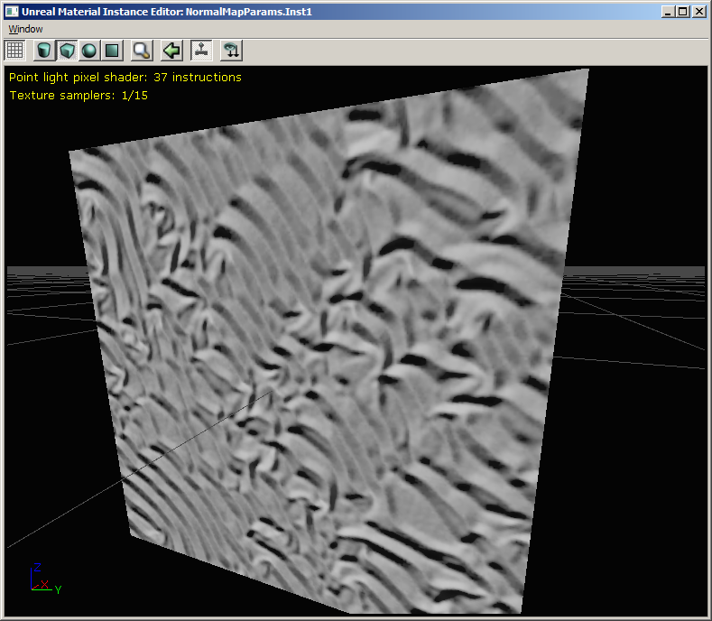
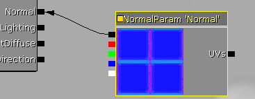

UDN
Search public documentation:
NormalMapFormats
日本語訳
中国翻译
한국어
Interested in the Unreal Engine?
Visit the Unreal Technology site.
Looking for jobs and company info?
Check out the Epic games site.
Questions about support via UDN?
Contact the UDN Staff
中国翻译
한국어
Interested in the Unreal Engine?
Visit the Unreal Technology site.
Looking for jobs and company info?
Check out the Epic games site.
Questions about support via UDN?
Contact the UDN Staff
Normal Map Formats
Overview
Normal formats
| CompressionSettings | Texture Format | Channels | Bits per Pixel | Size for 1024x1024 | Comments |
| TC_Normalmap | DXT1 | 3(*) | 4 | 512 KB | * It is possible to store 1-bit alpha (mask) in the alpha channel of DXT1 |
| TC_NormalmapAlpha | DXT5 | 4 | 8 | 1024 KB | |
| TC_NormalmapUncompressed | V8U8 | 2 | 16 | 2048 KB | Because the memory usage is 4x that of DXT1, the engine automatically reduces the resolution by one mip-map, to match the DXT1 footprint |
| TC_NormalmapBC5 | BC5 (3Dc / DXN) | 2 | 8 | 1024 KB | Supported on DirectX 10 and Xbox 360, or on ATI cards under DirectX 9 |
TC_Normalmap / DXT1
 TC_Normalmap (DXT1) has the smallest memory usage of any of the formats, but the DXT block compression is not very well suited to storing normal data. The result is typically very blocky.
TC_Normalmap (DXT1) has the smallest memory usage of any of the formats, but the DXT block compression is not very well suited to storing normal data. The result is typically very blocky.
TC_NormalmapAlpha / DXT5
TC_NormalmapAlpha (DXT5) has identical visual results to DXT1 but also has 4-bits per pixel of compressed alpha channel data to use as a mask. It's better for performance to put a mask you need in a DXT5 texture, rather than sample another texture. But if you put the mask into the diffuse texture, it would allow you to use another format for the normal.TC_NormalmapUncompressed / V8U8
The uncompressed format stores two of the normal's 3 channels in 8 bits each (so 16 bits per pixel). This is the highest quality but because only two channels are stored, the Z needs to be calculated in the pixel shader. (The material editor does this automatically, note the increased instruction count in the screenshot above). Because the memory usage is 4x that of DTX1, reducing the X and Y resolutions by half (ie 1 mip level) will make the memory usage identical. We believe that half-resolution uncompressed normals look better than DXT1 compressed normals, so the texture editor automatically reduces the resolution when choosing TC_NormalmapUncompressed format. The texture's original resolution is restored when changing back to another format. (This code is in UTexture2D::Compress() should you wish to remove or disable this functionality)TC_NormalmapBC5 / BC5 (3Dc / DXN)
 The BC5 format, otherwise known as 3Dc or DXN is not supported on all platforms- only DirectX 10, Xbox 360 and also under DirectX 9 on ATI graphic cards. For the normal's X and Y vectors it uses a 4 bit-per-pixel block compression scheme similar to that of the alpha channel on DXT5, meaning the channels are independent of each other. This gives a much less blocky result with the same memory footprint as DXT5. Like the uncompressed format, the Z is derived in the pixel shader.Material Editor Usage Notes
TextureSample node
Using a normal of any format inside a TextureSample node will work correctly. However, the normal format is only checked when the material's shaders are recompiled. So if you change the normal texture's CompressionSettings without recompiling shaders, the pixel shader code generated might not match. This is similar to the behavior of UnpackMin/Max.TextureSampleParameter2D node
Using a normal of any format inside the default value of a TextureSampleParameter2D node will work correctly. However, any material instance that overrides the default value must have the same CompressionSettings as the default Texture property of the parameter. Like TextureSample, the same warning about changing the default texture's CompressionSettings without recompiling shaders applies.TextureSampleParameterNormal node
 Using a normal of any format inside the default value of a TextureSampleParameterNormal node will work correctly, and also any constant instance created in the Material Instance Editor can override the normal parameter with a texture of any format. If the formats require different pixel shaders, a new version for the instance will be recompiled. But like TextureSample, the same warning about changing a texture's CompressionSettings without recompiling shaders applies.Recommendations
- Use TC_NormalmapUncompressed with reduced-resolution instead of TC_Normalmap, if it looks better for your content. The memory usage is the same.
- Use TC_NormalmapBC5 if you are making an Xbox 360 game and you feel the quality difference compared to reduced-resolution TC_NormalmapUncompressed is worth the 2x memory size increase.
- It is recommended you use the TextureSampleParameterNormal material node whenever you need to use a normal map as a parameter.
- You should be consistent with the normal map formats you use with a particular material instance parent, to reduce the number of shaders generated.